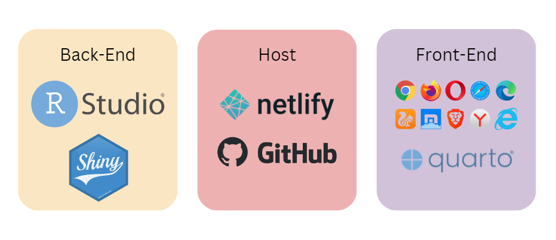

G1T7 PROJECT PROPOSAL
Background
When it comes to buying a home, there are several aspects to consider, such as debt-to-income ratio, down payment, job stability, emotional condition, legal paperwork, and the list goes on. With all of that in mind, one must still maintain track of a list of prospective options, the facilities around the premises, and the ease of it in order to forecast its future potential. As a result, integrating pricing, circumstances surrounding properties, and displaying it geopolitically might alleviate key concerns for purchasers and assist them in making informed judgments.
Project Motivation
Our main motivation is to assist people who are eligible to purchase HDB flats in gaining complete understanding of the location, surrounding facilities and demand of HDB flats which allows them to feel more confident about the residence they wish to acquire prior to making the major purchase.
Project Objectives
Real estate companies, property developers, and individuals looking to buy properties find it hard to have a comprehensive understanding of the prices and the ideal location. They desperately seek to have the information that will help to identify areas with high potential for growth and investment, or to determine the impact of new developments on their property values. There is now a lot of data accessible, but it is not as meaningful as individual components. For example, property values are not presented by geographical location. Similarly, other elements that have a significant influence on house prices, such as amenities like car parks, school and shopping malls are additional factors about which one should obtain information each time they locate a suitable property.
With that being said, this study seeks to gather crucial data that one might need to analyse and perform spatial point pattern analysis to:
Determine the spatial distribution of HDB prices and the presence of amenities across the study area.
Identify significant spatial clustering or dispersion of HDB prices and amenities.
Identify areas of the study area where certain amenities may be lacking or are in high demand, which can inform planning and policy decisions related to urban development and resource allocation.
In conclusion, geospatial analysis of housing prices and variables influencing housing prices is critical because it offers a more complete insight of the property’s future possibilities, and may assist stakeholders in making better educated decisions based on local, geographical considerations.
Data Sets
Below is a table of the data sets we will be using for our project.
| Name | Description | File Format |
|---|---|---|
| Master Plan 2019 Region Boundary (No Sea) | Consist of the Indicative polygon of region boundary. | .xml, .kml, .json |
| HDB Property Information | Consists of property information related to HDB such as type of property(residential), market and hawker tag, car park tag from January 1, 1937 to December 31, 2022. | .csv |
| HDB Flats Coordinates | Consist of the coordinates of HDB flats in Singapore which we geocode using geocoding API. | .csv |
| Price Range of HDB Flats Offered | Consists of information such as town of HDB flat, the max and min selling price as of from April 1, 2008 to March 31, 2022. | .csv |
| School Directory and Information | Consist of information such as school name, type of subjects offered and CCAs from March 24, 2021 to March 30, 2022. | .csv |
| Hawker Centres | Consist of the location of hawker centres in Singapore | .xml |
| MRT stations | Consist of MRT and LRT coordinates (as of December 2020) | .csv |
Literature Review
#1: Spatial Point Pattern Analysis of Human Settlements and Geographical Associations in Eastern Coastal China - A Case Study (Zhang et al., 2014)
This article highlights the potential of spatial point pattern analysis as a tool for gaining insights into the spatial patterns and associations of human settlements in rapidly urbanising regions. The article used spatial point pattern analysis techniques such as Ripley’s K-function and nearest neighbour analysis, to analyse the spatial distribution and clustering of human settlements in eastern coastal China. Based on their results, it demonstrates the importance of considering spatial relationships and locational factors in understanding settlement patterns and provides insights that can be used to inform urban planning and development policies.
How does it link to our project?
To examine the spatial distribution and clustering of HDB prices and facilities in Singapore. We plan to use the following functions referenced from the article:
Kernel density estimation: To identify areas with high or low concentrations of HDB prices or facilities, and to explore the relationship between HDB prices and surrounding amenities.
Ripley’s K-function: To measure the degree of spatial clustering or dispersion of point locations, which can help identify hotspots or coldspots of HDB prices or facilities and compare the observed spatial distribution of HDB prices or facilities to a random distribution, and test whether the observed pattern is statistically significant.
#2: Analysing the global and local spatial associations of medical resources across Wuhan city using POI data (Chen, Q et al., 2023)
This article highlights the issue of imbalance in the supply and demand of medical resources in provincial capitals of China and emphasises the need to understand the spatial patterns of medical resources to ensure fair and optimal allocation of limited resources. This article utilises the Localised Colocation Quotient (LCLQ) analysis, which is a technique that measures directional spatial associations and heterogeneity between categorical point data. By employing this method and utilising point of interest (POI) data, the study presents a unique analysis of the spatial patterns and directional spatial associations between six medical resources in Wuhan city.
How does it link to our project?
For our project, we need to first define the two types of features of interest which will be HDB prices and the presence of certain amenities. Some examples are schools, carparks, shopping centres and MRT stations. By comparing the observed and expected frequencies of co-occurrence using the LCLQ, we can determine whether HDB prices and surrounding amenities are spatially associated in a non-random way. This can provide insights into the degree to which the availability of amenities in an area affects HDB prices, and vice versa.
Our Approach
Data Preparation
Assemble data from various sources
Data handling and wrangling
Exploratory Data Analysis
Analyse the spatial arrangement of data points
Identify any outliers or anomalies in the data sets
Choropleth Mapping
Spatial Point Patterns Analysis
First point Analysis
- Kernel Density Estimation
Second point Analysis
F-Function: Identify whether the distribution of amenities around HDBs is random or clustered, and the ratio of observed to expected nearest neighbor distances.
Ripley’s K-function and L function: To measure the degree of clustering or dispersion of HDB prices and surrounding amenities, and help identify significant spatial patterns and trends.
Colocation Quotients CLQs: To measure the extent of spatial association and heterogeneity between HDB prices and surrounding amenities, helping to identify areas of high or low co-location.
Application System Architecture

Timeline

Early Storyboard Drafts
We used Figma to create a draft designs of our storyboard on how we imagine our Shiny app to look like. Please click here to view it in Figma.


References
Literature review #1: https://www.mdpi.com/1660-4601/11/3/2818
Literature review #2: https://link.springer.com/article/10.1186/s12913-023-09051-0